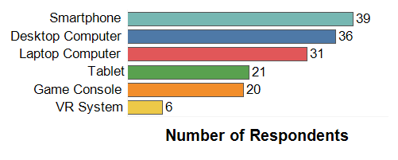
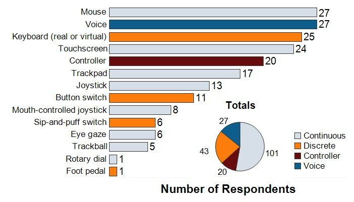
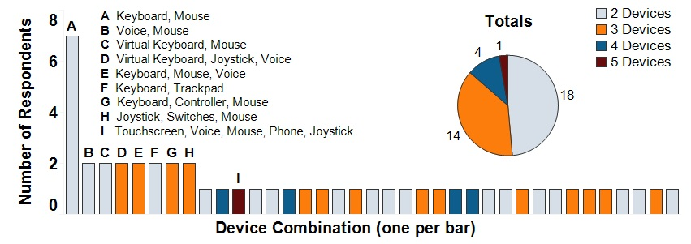
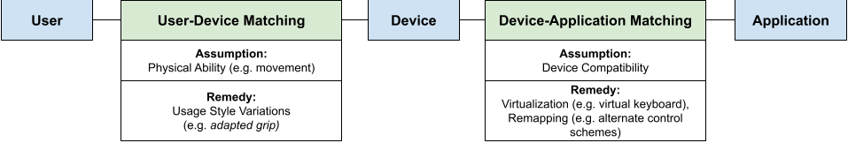

Quick Facts
- People with limited mobility often combine input devices (e.g. keyboard and mouse) to overcome accessibility barriers, creating various different multi-modal input setups.
- These multi-modal input setups vary widely based on individual mobility needs.
- Accessibility issues are caused by mismatches between the user and device, or between the device and application.
- People gather inspiration for multi-modal configurations from social media and word-of-mouth.
- Developers can improve the accessibility of their applications by adding tools for discovering and implementing multi-modal input configurations.
Abstract
People with limited mobility often use multiple devices when interacting with computing systems, but little is known about the impact these multi-modal configurations have on daily computing use. A deeper understanding of the practices, preferences, obstacles, and workarounds associated with accessible multi-modal input can uncover opportunities to create more accessible computer applications and hardware. We explored how people with limited mobility use multi-modality through a three-part investigation grounded in the context of video games. First, we surveyed 43 people to learn about their preferred devices and configurations. Next, we conducted semi-structured interviews with 14 participants to understand their experiences and challenges with using, configuring, and discovering input setups. Lastly, we performed a systematic review of 74 YouTube videos to illustrate and categorize input setups and adaptations in-situ. We conclude with a discussion on how our findings can inform future accessibility research for current and emerging computing technologies.
Methodology
To fully explore how people with mobility limitations use multi-modal input for accessibility, we performed a three-part investigation:
- A survey of 43 people with mobility limitations to see the number of devices and combinations being used in everyday setups.
- Semi-structured interviews of 14 people with mobility limitations to gain deeper insight into these combinations and associated challenges.
- A systematic review of YouTube, analyzing 74 videos of people using accessible multi-modal input setups.
Survey
We surveyed 43 people with mobility limitations to look at their preferred devices and input configurations.
First, we asked respondents which categories of computing device they own.
Next, we asked respondents to list all the input devices they use with these computing devices.
We organized these input devices into four categories:
- Discrete, which has a distinct "on" and "off" state, like a button.
- Continuous, where the input value can be anywhere within a specific range, like a joystick or mouse.
- Controller, which combines both discrete (buttons, d-pads) and continuous (joystick) input styles. Game controllers fit into this category.
- Voice, which doesn't really fall into any of the above categories but is still important to consider.
Following this, we asked respondents to list all the combinations of devices they use, such as mouse and keyboard, trackpad and keyboard, etc.
Respondents said that they combined input devices frequently, but these input combinations vary significantly based on individual user ability.
Lesson learned: there is no one-size-fits-all solution for creating accessible multi-device interfaces. Designing for customization, inter-compatibility, and robustness to accommodate input variety is of utmost importance to developers creating multi-modal input systems.
Interviews
We interviewed 14 people with mobility issues to learn about the challenges and remedies they use for multi-modal input systems. We focused on gaming as a central theme for participant discussion.
Our main findings:
- More people preferred slower-paced games as they were generally more acommodating for different styles of use.
- People remedied input device accessibility issues by adopting four usage styles:
- conventional usage, possibly including alternate control schemes,
- adapted grip (changing how they hold or use the device),
- adapted device (hardware modifications to the device), and
- alternate device, swapping the input device for another entirely.
- People used remapping often, either by re-assigning individual buttons or swapping between premade control schemes. Swapping between premade control schemes was more common in users who played console games.
- Input device combinations were very common, and people would often discover new input configurations and combinations by browsing social media.
Lesson learned: the issues and remedies associated with combining input devices can be broken down into a two-step matching process, between user and application. Each step involves an assumption (what the device or application expects) and an associated remedy (how to overcome that assumption not being met).
Systematic Review: YouTube
The interviews showed that users use social media to find new input combination ideas. We examined 74 YouTube videos to show what this search process could uncover.
We created a program that searches YouTube for every combination of one accessibility keyword and one gaming keyword from the lists below.
Keywords (click to show):
Our main findings:
- Most videos showed one device being used, but the vast majority of those one-device videos showed users playing on a game console.
- Videos showing console gamers had a bigger variety in usage styles, but the vidoes showing PC gamers showed more alternate devices being used.
- Videos of console gamers showed them using multiple body parts more often.
Lesson learned: the differences in device compatibility between console and PC games affect how users engage with these games, from body position to device choice.
What Can We Learn?
- General Support: Designers need to design their apps to accommodate a wide variety of hardware and combinations.
- Discovery: Tools to help users discover and implement multi-device configurations will make a significant difference to a system's usability.
- Virtual Devices: Many users reported using virtual devices (software keyboard, etc.) to supplement real ones. Researchers need to consider virtual devices as a meaningful part of future device spaces.
Contact Us
Questions? Feel free to contact:
- Johann Wentzel (PhD student, University of Waterloo)
jdwentze [at] uwaterloo.ca - Sasa Junuzovic (Microsoft Research)
sasa.junuzovic [at] microsoft.com - James Devine (Microsoft Research)
t-jamdev [at] microsoft.com - John Porter (Microsoft)
john.porter [at] microsoft.com - Martez Mott (Microsoft Research)
martez.mott [at] microsoft.com